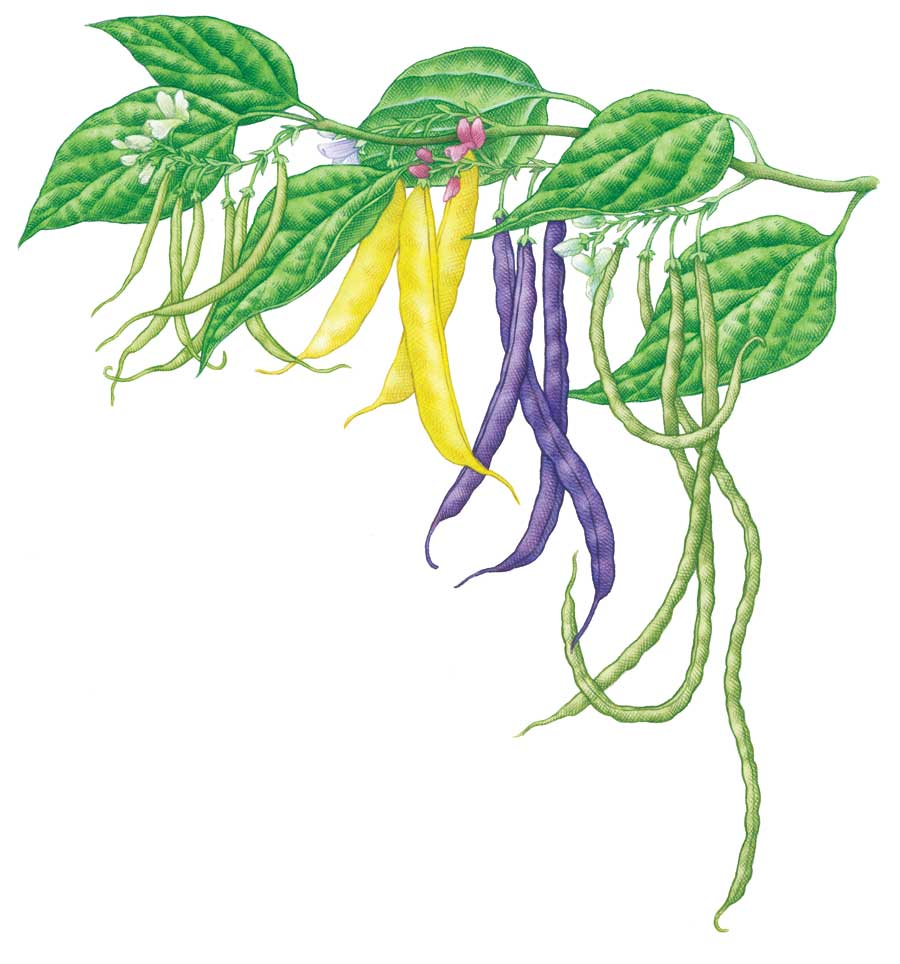
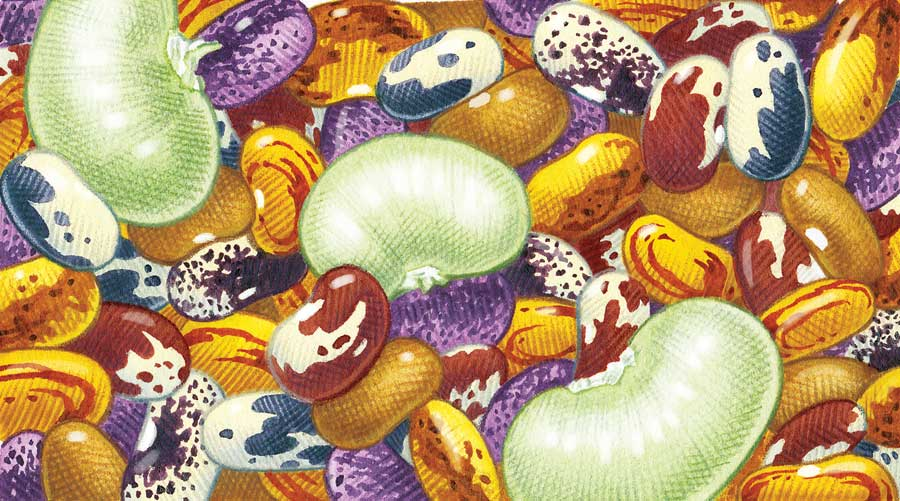

Dependable and easy to grow, beans produce rewarding crops in a wide range of climates. Grown during the warm summer months, beans may produce crisp green pods, protein-rich beans, or both, depending on variety.
Snap beans - the most popular garden beans - include bush and pole varieties, which vary in shape, size and color. Tender filet beans are a type of green snap bean with stringless, slender, delicate pods. They are grown just like other snap beans.
Dry soup beans grow like snap beans, but the immature pods stay tender for only a few days as the plants hurry to produce mature seeds. They are very easy to dry.
Scarlet runner beans produce showy clusters of red blossoms that attract hummingbirds and bumblebees. You can eat the young pods like snap beans, or let the pods dry and harvest the mature beans.
Lima beans stand up to humid heat and heavy insect pressure, which makes them a fine bean for warm climates.
Yard-long beans, or asparagus beans, are grown for their long, slender pods, which are harvested at 12 to 18 inches long. Pods may be green, burgundy or streaked.
Tepary beans, a type of dry bean, were developed by the native people of the Southwest, so they’re well-adapted to desert conditions. They come in various colors. See also: Tepary Beans: The Bean That Laughs at Drought and Ask Our Experts: Tepary Beans.
Bean seeds germinate best when soil temperatures range between 60 and 70 degrees Fahrenheit. In spring, sow seeds in fertile, well-worked soil starting on or after your last frost date. When growing fast-maturing bush snap beans, make additional plantings at three-week intervals until midsummer.
Prepare the planting bed by using a garden fork to loosen the soil. Mix in a 1-inch layer of mature compost. Plant seeds 1 inch deep and 2 to 4 inches apart. Thin bush beans to 4 inches apart; thin pole beans to 6 inches apart. Wide double rows (two parallel rows of beans planted 12 to 14 inches apart) are the most space-efficient way to grow beans.
Harvest green beans when they are young and tender, and use two hands when picking to keep from breaking the brittle plants. Most bush beans will produce a second or third flush of beans after the first one is picked. Harvest pole beans at least twice a week to keep the plants productive. The mature beans of all snap bean varieties usually make good soup beans.
Allow dry beans to stay on the plants until the pods turn tan and the beans inside show good color and a hard, glossy surface. If damp weather sets in just when your beans should be drying, pull up the plants and hang them in a dry place until they are dry enough to shell and sort. Allow your shelled beans to dry at room temperature for two weeks before storing them in airtight containers. If you think insects might be present in your stored beans, keep them in the freezer.
To save dry beans for replanting, select the largest, most perfect seeds from your stored beans. With snap beans, it is best not to harvest beans from plants grown for seed production. That way, the plants will channel all their energy into big seeds that will grow into big seedlings. Be patient, because snap bean varieties that have been bred to stay tender for a long time are often slow to develop mature seeds. Under good conditions, bean seeds will store for at least three years. A packet will plant about 25 feet of row, which should produce 20 to 30 pounds of bush snap beans, or 40 pounds or more of pole beans. Expect about 1 1⁄2 pounds of dry beans from a 25-foot row.
Extend your harvest of bush snap beans by planting them two or three times, with each sowing three weeks apart. In warm climates, make a sowing in late summer, about 10 weeks before your first fall frost is expected.
Grow more beans in less space by growing pole varieties, which produce more per square foot by making good use of vertical growing space. Tall bamboo poles or saplings make easy tripods to support pole varieties.
Be stingy with fertilizer. Beans benefit from fertile soil with a slightly acid pH (between 6.0 and 6.5), but once they are up and growing, beans make most of the nitrogen they need (which they use to nurture their crop of seeds). When growing beans in a new garden site, inoculating seeds with nitrogen-fixing bacteria before planting can help kick-start this process. Even simpler, scatter a few spadefuls of soil from last year’s bean patch into new planting sites.
Use bush beans as a cover crop in warm summer weather. You can turn the plants under, or pull them up and compost them.
Kids of all ages love to munch garden-fresh green beans, especially sweet and tender filet types. Extra green beans are easy to blanch and freeze, and rehydrated dried snap beans taste almost as good as fresh ones. Gather some of your soup beans at the mature green stage to use in succotash and other summer dishes, and dry the rest for winter. Green beans are a good source of fiber and vitamins A and C, while dry beans are rich in B vitamins and minerals. Team up beans with grains (such as rice or corn) to get prime protein from both foods, as beans and grains contain complementary essential amino acids.
See also: Discover Real Green Beans, Three’s Not a Crowd and Savoring Bean Gleaning Season.
|
 KEITH WARD Dependable and easy to grow, beans produce rewarding crops in a wide range of climates. |
 KEITH WARD Many different types of beans can be enjoyed year-round as dry beans. |
|